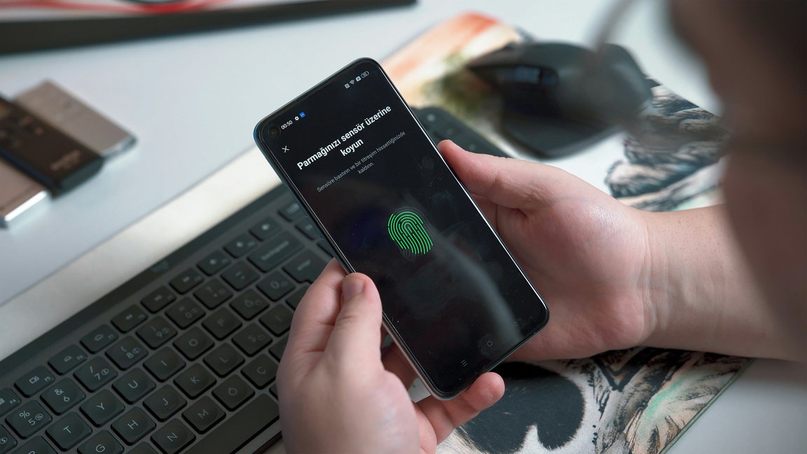

Selected Work
다섯 프로젝트로 보는 설계 판단
Second Context를 시작하기 전, Rachel Cho가 이전 경력에서 수행한 프로젝트입니다. 고객사 이름은 밝히지 않으며, 화면은 설계 판단을 설명하기 위해 다시 구성했습니다.
 헬스케어 SaaS
Healthcare Scheduling복잡한 방문 일정을 명확한 다음 단계로
헬스케어 SaaS
Healthcare Scheduling복잡한 방문 일정을 명확한 다음 단계로
 엔터프라이즈 운영
Enterprise Operations많은 신호 속에서 먼저 대응할 문제 찾기
엔터프라이즈 운영
Enterprise Operations많은 신호 속에서 먼저 대응할 문제 찾기

규제 산업 모바일 앱 Identity Verification상황이 달라도 이어지는 본인 인증 경험 제품 현지화
Product Localization언어와 사용 맥락에 맞춘 제품 경험
제품 현지화
Product Localization언어와 사용 맥락에 맞춘 제품 경험
 Globalization · Online Go Server
Making Go Accessible Across Cultures전통적인 아시아 전략 게임인 바둑을 글로벌 사용자들이 보다 쉽게 이해하고 즐길 수 있도록 디지털 경험을 재설계한 프로젝트입니다.
Globalization · Online Go Server
Making Go Accessible Across Cultures전통적인 아시아 전략 게임인 바둑을 글로벌 사용자들이 보다 쉽게 이해하고 즐길 수 있도록 디지털 경험을 재설계한 프로젝트입니다.